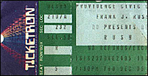

|
December 5, 1985 Civic Center. Providence, RI
 scan by Ray Lambert
The Boston Globe
RUSH Rocks To A Different Drummer Rock 'n' roll drummers are generally viewed as volatile, undisciplined bashers who attack colossal drum sets as if every song were their last. Then again, there's Neil Peart of the Canadian band Rush, which performs in the Providence Civic Center tonight and the Worcester Centrum next Thursday and Friday. Known as "the professor," Peart is not only one of rock's most dextrous, dramatic drummers, but an extremely prolific lyricist who also writes Rush's biographical sketches and plans a novel. Peart, bassist-keyboardist-vocalist Geddy Lee and guitarist Alex Lifeson all hail from suburban Toronto, a hotbed for music of all idioms. :There doesn't exist an easily definable Canadian sound," said Peart during a recent telephone interview from his home city. "But in the '60s, Toronto, like Detroit and Philadelphia, was influenced by black R&B. My background was in white soul bands backing up black singer." Rush began in 1968, although Peart didn't join until 1974 when he replaced drummer John Rutsey and assumed the lyrical chores. The band recorded several albums in the '70s, but most were marred by a derivative, unfocused heavy metal sound and ponderous epic fantasies such as "By-Tor and the Snow Dog" and "The Fountain of Lamneth." A rush they were not. The band came into its own, though, in 1979 with "The Spirit of Radio," a song reflecting a more streamlined, controlled sound, and lyrics which dealt with emotions and reality rather than cornball mythology and futuristic symbols. "The '70s was definitely a period of schizophrenic exploration and education," Peart recalled. "We were never confident in our abilities, but we wanted to improve and felt we should go about it by following our instincts and obsessions. "Around the turn of the '80s, we started to feel more assured as both musicians and songwriters. We were able to look at a song as just a song, and no longer felt compelled to overdress the music in order to hide inadequacies." Rush's work in the '80s, particularly the albums "Moving Pictures" (1981) and the current "Power Windows," represents some of the most impressive music in the mainstream milieu. At the core is the trio's instrumental virtuosity, which allows the freedom to play clear, complex arrangements. Eclectic colorings are taken from international idioms and rock artists as diverse as Devo, the Dregs, Santana and U2. "They're all in there," said Peart. "We're a receptive audience for our contemporaries' music, which keeps us fresh and satisfied when we create our own. We'll never be pushed into doing solo albums because everything we like goes into Rush." Peart's lyrics are of the grand scale variety and literary in nature. He usually writes with one ear towards poetic and musical rhythms, and the other to Lee's oddly distinctive voice. "When I'm working on lyrics, I perceive a theoretical, rhythmic foundation for the words before I marshal them into order. I'm very empathetic toward Geddy, who's a real sounding board for my ideas. If there's a line he just can't get behind as a singer, I put it away, which doesn't tarnish the joy of writing or the satisfaction of achieving what I wanted." One of several interesting songs on the new album is "Manhattan Project," which is about the United States' use of nuclear weapons during World War II. "When I started that song, I only wanted to dramatize the event itself. But after doing so much research, I realized just what had happened and began to empathize with the people involved. They weren't hearless crazy monsters, just regular, patriotic people caught up in the momentum of events." "Territories" deals with isolation on both a worldly and individual level and includes a few of Peart's more compelling lines; "Don't feed the people but we feed the machines/Can't really feel what international means" and "Better the pride that resides in a citizen of the world/Than the pride that divides when a colorful flag is unfurled." Like many of Peart's lyrical ideas, the current single "The Big Money" came from his extensive reading. "The genesis for that song was from the first book of the 'USA Trilogy' written by John Dos Passos in the 1920s. It dealt with the J.P. Morgan loans and the economic causes of World War I." "I didn't want the song to be totally in the voice of a cynical anti-corporate reactionary, though, because things like the Ford Foundation do accomplish a lot of good. I mean the church and worth events like Live Aid are big money, too." Peart is among a small group of rock drummers -- including Stewart Copeland of the Police and Journey's Steve Smith -- highly revered by other drummers. But he finds great difficulty in accepting praise. In a recent letter to Modern Drummer magazine, Peart almost apologized for receiving the "Best Recorded Performance Award" and even quoted one of Groucho Marx's greatest self-deprecating lines: "I wouldn't want to be in a club that would have me for a member." A recent recoding session, though, enabled Peart to be more appreciative of his percussive skills. "Before we recorded the new album, I was in San Francisco to play a session for Jeff Berlin, a highly respected jazz bassist. The people with whom I was working were very well schooled in that area, and I was very nervous coming in with the stigma of being a successful rock musician. All I was called upon to do, though, was a good job, which I did. The satisfaction level was enormous and carried through into the recording of the 'Power Windows' album." Peart is a very private person who rarely answers personal questions and is uncomfortable with the backstage scene. "I love meeting people on equal terms, when they have no idea who I am. For instance, I recently traveled on a steamer up the east coast of China. While standing on the bow to watch the waves, I saw a Chinese fellow who seemed to share my love for the sea. Throughout the voyage we would cross paths on the way to the bow and just smile at each other. There was something shared there and I'll never forget that person. At the same time I probably won't forget someone who comes screaming up to me backstage, grabs me and tells me how wonderful I am -- but for a totally different reason." One major criticism of Rush is that the band's music is overly technical and arty, too dispassionate to be considered true rock 'n' roll. Peart considers it a flimsy observation. "To be good musicians has always been an obsession with this band. To make our songs different and interesting, to grow and keep changing is what we love. The fact that we take a lot of care about it doesn't put any distance between us and the music. "You know there's not that many bands making really honest music. We feel that we're following the true course of our profession. What could be more passionate than that?"
|